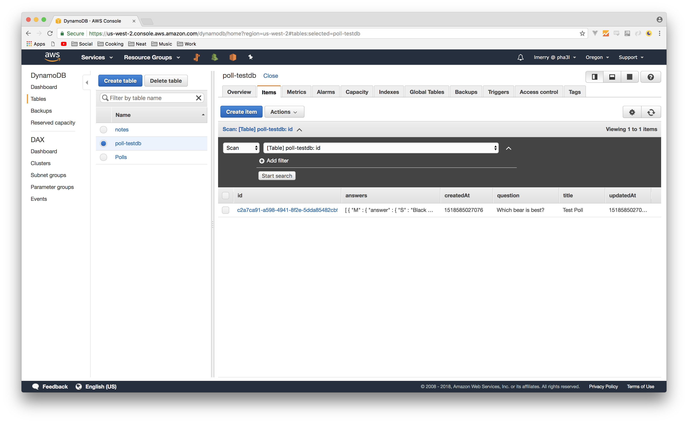

Authoring the Create Function
With Typescript, we can use an interface to define the structure and expected properties (and thier types) of an object, and use this to our advantage as we write our application. We'll use this to ensure we have a consistent data model across all of our functions. Let's start by defining an interface, poll.model.ts, at the root of the src folder:
src/poll.model.ts
export interface Poll {
id: string;
title: string;
question: string;
answers: Array<string>;
createdAt: Date;
updateAt: Date;
}
But, we also need a way to track the number of votes for each answer. In the same file below the Poll interface definition, create another interface, PollAnswer as follows:
export interface PollAnswer {
answer: string;
votes: number;
}
And then change the type of the answers property to Array<PollAnswer>.
The final file should look like this now:
export interface Poll {
id: string;
title: string;
question: string;
answers: Array<PollAnswer>;
createdAt: Date;
updateAt: Date;
}
export interface PollAnswer {
answer: string;
votes: number;
}
Now, we want to avoid duplicating code between our functions so let's implement a basic repository design pattern that will abstract the DynamoDB logic. With only one table/model, this may seem like overkill, but in a more complex project it's a great way to DRY up the persistence logic. Create a file dynamo-repository.ts:
src/dynamo-repository.ts
import { DocumentClient } from 'aws-sdk/lib/dynamodb/document_client';
import { DynamoDB } from 'aws-sdk';
import { PutItemInput, PutItemOutput } from 'aws-sdk/clients/dynamodb';
export class DynamoRepository<T> {
private dynamoClient : DocumentClient = new DynamoDB.DocumentClient();
constructor(private tableName: string) {}
public create(entity: T) : Promise<PutItemOutput> {
let params = {
TableName: this.tableName,
Item: entity as Object
} as PutItemInput;
return new Promise<PutItemOutput>((resolve, reject) => {
this.dynamoClient.put(params, (err, data) => {
if (err) reject(err);
else resolve(data);
});
});
}
}
What we've done here is create a generic repository class that will work with any table/entity. Note that we've pulled the region for the table out of the environment, so we'll have to make sure this is set later.
Along the same lines, let's create a class to represent the response that API Gateway expects when invoking the lambda on the user's behalf. Create a file api-gateway-response.ts:
src/api-gateway-response.ts
export class ApiGatewayResponse {
private statusCode: number;
private headers: {
"Access-Control-Allow-Origin": "*",
"Access-Control-Allow-Credentials": true
}
private body: string;
private isBase64Encoded: boolean;
constructor(responseType: ResponseType, body: Object, isBase64Encoded?: boolean) {
this.statusCode = responseType;
this.body = JSON.stringify(body);
this.isBase64Encoded = isBase64Encoded || false;
}
}
export enum ResponseType {
OK = 200,
SERVER_ERROR = 500,
}
Unlike relational database systems that you may be more familiar with, DynamoDB and other object-based NoSQL databases don't have a utility for generating unique identifiers built in, so let's add an NPM package to help us generate them in our function:
$ npm install --save uuid
We installed the uuid package with the --save flag, which means that it will not only be installed to node_modules, but will be added to our package.json.
While we're on the subject of npm dependencies, you might have noticed that the aws-sdk is specified as a dev dependency. This is because lambda provides this in the execution environment, so we don't need to bundle it, which is great because it's a large package.
Now we have all the pieces in place, and we can implement the actual function. Create the file create-poll.function.ts:
src/create-poll.function.ts
import { Handler, APIGatewayEvent, Context, Callback } from 'aws-lambda';
import { v4 as uuid } from 'uuid';
import { Poll } from './poll.model';
import { DynamoRepository } from './dynamo-repository';
import { ApiGatewayResponse, ResponseType } from './api-gateway-response';
export const handler: Handler = (event: APIGatewayEvent, context: Context, callback?: Callback) => {
let poll = JSON.parse(event.body) as Poll;
let now = new Date().getTime();
poll.createdAt = now;
poll.updatedAt = now;
poll.id = uuid();
new DynamoRepository<Poll>(process.env.TABLE_NAME).create(poll).then((val) => {
callback(null, new ApiGatewayResponse(ResponseType.OK, poll));
}).catch((err) => {
callback(null, new ApiGatewayResponse(ResponseType.SERVER_ERROR, { status: false, error: err }));
});
}
The last step is to describe our function within the CloudFormation template. Remove the section for the HelloWorldSample function and add the following under the Dynamo table in template.yml:
template.yml
...
CreatePoll:
Type: AWS::Serverless::Function
Properties:
CodeUri: ../dist/create-poll/create-poll.zip
Handler: index.handler
Runtime: nodejs6.10
Policies: AmazonDynamoDBFullAccess
Events:
CreatePoll:
Type: Api
Properties:
Path: /polls
Method: POST
Environment:
Variables:
TABLE_NAME: !Ref Polls
Here you can see we've added a new function with a Logical ID of CreatePoll, and pointed it at the transpiled, packaged and minified webpack output for the function script. We've also given the function a managed policy that gives it full access to DynamoDB resources. While this isn't the best idea for production use and you'd want to define a role with more limited scope (which you can do right in the CloudFormation template and reference directly!), it will be fine for our purpose. We've also defined the event triggers for the function, in this case an API Gateway route of /polls with a POST HTTP method. Finally, we've given the function access to an environment variable called TABLE_NAME, which we already used in the function code to get the table name. We've then used the !Ref intrinsic function to obtain the table name from the resource defined above.
===
With our first function authored, howabout a quick test to see how we're doing so far? Let's generate a mock payload using sam-local:
$ sam local generate-event api -m POST -b "{\\\"title\\\":\\\"Test Poll\\\", \\\"question\\\": \\\"Which bear is best?\\\", \\\"answers\\\": [{\\\"answer\\\":\\\"Black Bear\\\", \\\"votes\\\":0},{\\\"answer\\\":\\\"That's debatable...\\\", \\\"votes\\\":0}]}" > mocks/create-poll.json
Now, we'll need a real dynamodb table to use for testing, so although in the end we'd like to provision it with the SAM CloudFormation template, let's create a table to use for our testing. We'll do so using the CLI:
$ aws dynamodb create-table --region us-west-2 \
--table-name poll-testdb \
--attribute-definitions AttributeName=id,AttributeType=S \
--key-schema AttributeName=id,KeyType=HASH \
--provisioned-throughput ReadCapacityUnits=5,WriteCapacityUnits=5
Run webpack to generate the function package:
$ webpack
Now let's invoke the function using sam-local, sending our mock event as the payload:
$ AWS_REGION="us-west-2" TABLE_NAME="poll-testdb" sam local invoke CreatePoll -e mocks/create-poll.json
Note that we passed the environment variables needed by the function directly to sam-local. Even if they are defined in the CloudFormation template, sam-local will not pick them up so this is necessary.
If everything went okay, you should see {"statusCode":200,"body":{}} at the bottom of the output. You can then head to the console to check out the table contents:

Alternatively, you can use the CLI to check:
$ aws --region us-west-2 dynamodb scan --table-name poll-testdb
{
"Items": [
{
"createdAt": {
"N": "1518585027076"
},
"question": {
"S": "Which bear is best?"
},
"answers": {
"L": [
{
"M": {
"answer": {
"S": "Black Bear"
},
"votes": {
"N": "0"
}
}
},
{
"M": {
"answer": {
"S": "That's debatable..."
},
"votes": {
"N": "0"
}
}
}
]
},
"id": {
"S": "c2a7ca91-a598-4941-8f2e-5dda85482cb9"
},
"updatedAt": {
"N": "1518585027076"
},
"title": {
"S": "Test Poll"
}
}
],
"Count": 1,
"ScannedCount": 1,
"ConsumedCapacity": null
}
As you can see, we successfully created a record in the table! Hold on to the id of the returned record, we'll use it for further tests. Let's continue fleshing out the API functionality. In the next section, we'll create a function to retrieve a single poll record by it's id.